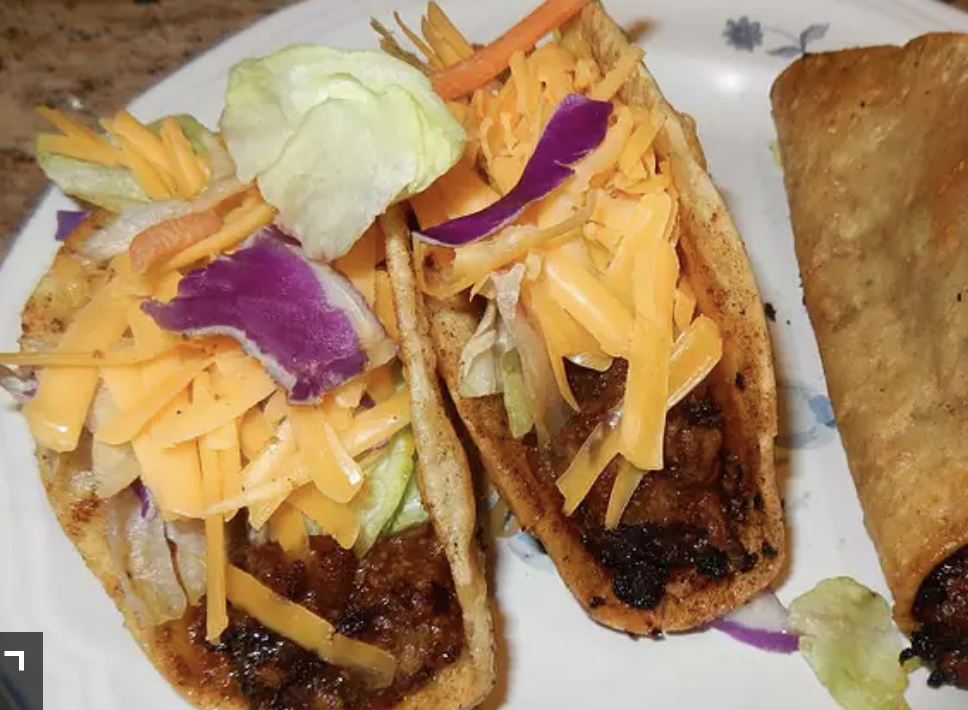

865 calories; protein 51.3g; carbohydrates 56.2g; fat 48.6g; cholesterol 166.1mg; sodium 1486.1mg.
Ingredients
-
18 medium taco shells
-
2 pounds lean ground beef
-
1 (14 ounce) bottle ketchup
-
1 (8 ounce) package shredded Cheddar cheese
-
1 large tomato, diced
-
1 cup iceberg lettuce, shredded
Steps
-
Preheat oven to 375 degrees F (190 degrees C).
-
Warm taco shells for 5 minutes on the center rack in the preheated oven.
-
In a medium skillet over medium high heat, brown the beef. Halfway through browning, pour in ketchup. Stir well and let simmer for 5 minutes.
-
Spoon the meat mixture into the warm taco shells and top with Cheddar cheese. Return the filled taco shells to the preheated oven and bake until cheese is melted. Top each taco with a little tomato and lettuce.
Return to top
Return to main page